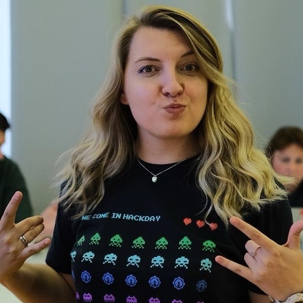

Hi, my name is
I ensure product quality at every stage — from requirements analysis to the final release.

I'm a Senior QA Engineer with 5+ years of experience testing products in different areas, such as marketplaces, TMS systems, mailings, and payments. I currently live in Gijon, Spain and am looking for new opportunities, either in Spain or remote. I hold a valid EU work permit.
As a manual QA Engineer, I've worked on testing complex systems and handling a variety of scenarios. I focus on identifying risks early in the process, which helps reduce correction costs and improve product quality. I'm used to working with limited resources, prioritizing tasks, and ensuring stable, high-quality releases.
Outside of work I enjoy crocheting, traveling and learning new languages. Always open to interesting projects and new connections.
Built the testing process from scratch for a product development team, which started with 2 people and has now grown to 9.
Launched and managed 3+ new services (marketplace, warehouse scheduling, email campaigns) from scratch, ensuring bug-free releases and testing complex business logic, even with limited resources and tight deadlines.
Supported the migration from monolith to microservices by thoroughly testing rewritten modules, identifying critical issues early, and ensuring stable releases with no downtime.
Improved automated test quality, increasing the success rate from 60% to 90%, speeding up testing cycles and significantly enhancing overall system stability.
Planned and managed testing activities, ran cross-team quality audits, and monitored defect metrics — driving a 3× reduction in production incidents.
Spoke at SQA Days on how QA engineers can use JMeter beyond performance testing — applying it for functional testing scenarios. Watch the talk →
A leading freight marketplace and transportation logistics ecosystem in the CIS with over 500K daily active users.
A leading freight marketplace and transportation logistics ecosystem in the CIS with over 500K daily active users.
Open to new opportunities, interesting projects, and good conversations. Drop me a message — I'll get back to you within the day.